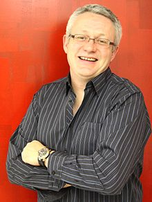

Florian Bellanger
Biography
Florian Bellanger was born on April 20, 1968 in Saint Denis, France. When Florian was a young child he would spend his free afternoons in the kitchen making pastries for his family. He had a childhood chocolate allergy for about 6 years or so but luckily he outgrew his allergy. At the age of fifteen he applied for a prestigious pastry school in Paris. Florian got rejected to go to that school because he was a year younger to enroll. In 1983 he got accepted to go to the school he wanted to which was L'Ecole de Paris Des Metiers de la Table in 1986. He graduated with a degree of pastry arts and a specialty in chocolate and ice cream. Married his wife Anna Bellanger in 1995 up until 2001 because she passed away. He has three children Roman, Aldrin, and Evan. In 1996 he became the pastry chef for Le Bernandin until 2001, making the restaurant to four-star status. He was also the Pastry Chef in the French Military Officer's Club in French Guyana. In 2001 and 2002, the James Beard Foundation recognized Florian's accomplishments. Florian was named one of the "10 Best Pastry Chefs in America" in 2003 and in 2004. Florian is the Co-Owner of Mad Mac, Mad Mac was founded in 2006. Florian became a permanent judge for the show Cupcake Wars. He donates for Anthony Spinazolla Foundation and the Jean-Louis Foundation.
Accomplisments
- Got recognized by the James Beard Foudation
- Was named one of the "10 Best Pastry Chefs In America"
- Became the co-owner of Mad Mac
- Became a permanent judge for the show Cupcake Wars
Courses
- Pastry Arts
- Baking Techniques
- Kitchen Safety